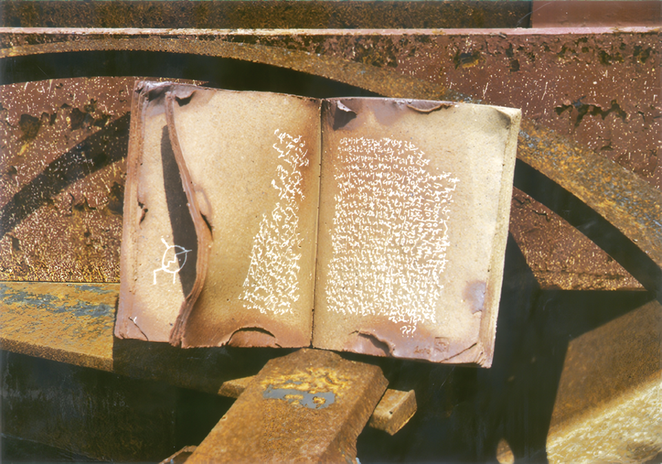

안순영 도예展 - 흙으로 만든 책
스톤앤워터 지역 작가 초대전 두번째
2003_1025 ▶ 2003_1108

초대일시_2003_1025_토요일_05:00pm
초 대 합 니 다
늦가을의 하늘을 바라보고 있노라면
뜻모를 기억의 단상들이 구름인듯 떠다니며 사색에 잠기게 됩니다.
아마 망각된 천년 혹은 수억년 전의 기억들일지 모릅니다.
이러한 단상들이 도예가의 손에 의해 흙 속에 각인되고
다시 뜨거운 불속에서 제본 되었습니다.
안순영의 도예展 ‘흙으로 만든 책’에 오셔서
기억의 저편에 숨겨졌던 그 무엇을 되찾으시길 바랍니다.
스톤앤워터 관장 박 찬 응 올림
도예가 안순영의 '흙으로 만든 책'에 대해
- 흙내음 나는 삶의 단상들..
가을은 독서의 계절, 사색의 계절이라 한다. 낙엽이 한 잎 두 잎 떨어지고 찬바람이 옷깃을 스치고 지나가는 늦가을이면 지난 세월에 대한 추억들로 사색에 잠기곤 한다. 이러한 단상들은 도예가 안순영의 손에 의해 흙 속에 각인되고 다시 불 속에서 제본되어 책으로 탄생되었다. 경상남도 산청지방에서 난다는 산청 흙으로 빚은 다음 소금 유약을 덧발라 색을 낸 것이다. 이렇게 도예가의 손을 거쳐 자연의 힘으로 만들어진 책은 투박하면서도 꾸밈이 없다. 그 모습을 보면 빛깔은 은은한 적갈색이요 모양은 넘어가는 책장이 굳어버린 모습이다. 안순영의 흙으로 만든 책은 삶의 어느 순간이 정지된 듯하다. 펼쳐진 책장에는 작가가 갈겨쓴 필기체의 글과 추상화 그리고 상형문자들이 새겨져 있다. 이것들은 작가가 흙을 만지면서 순간순간 떠오르는 단상들과 기억 속에 자리잡고 있던 상념들을 적은 것이라고 한다. 지나가 버리는 그 시간이 아쉬운 듯 20여 년이 넘는 세월을 흙과 함께 해 온 도예가 안순영은 그 흙으로 인생의 페이지를 빚어내고 그 속에 삶을 새겨 넣었다. 그가 빚은 책에서는 삶의 내음, 자연의 내음 그리고 소탈하면서 넉넉한 한 인간의 내! 음이 풍겨온다. 올 가을에는 흙내음 나는 책을 읽어보는게 어떨까..


책만큼 자연적인 사물도 없다. 학교 교실에서 흔히 볼 수 있는 교과서, 출퇴근길에 마주치는 직장인들의 손에 들린 신간, 도서관 서가를 빼곡히 채우고 독자를 기다리는 책까지 그 근본은 모두 '나무' 다. 여기에 최초의 점통판, 즉 흙으로 만들어졌다는 사실까지 덧붙이면 책은 곧 인간과 자연을 만나게 하는 가장 일상적인 사물이 된다.
안순영 작가는 경남 산청 지방의 흙으로 만든 책 20여점을 안양 스톤앤워터에서 전시하고 있다. 흙으로 빚은 후 소금 유약처리를 한 책은 굳어 있어 넘길 수는 없다. 그렇지만 아이들은 투박해서 꾸밈이 없는 흙빛 책을 보면서 펼쳐놓은 페이지의 앞뒷장에는 무슨 이야기들이 있을지 상상하는 시간을 가질 수 있어 넘길 수 있는 책이 주는 감동 이상을 가져갔다. 흙으로 만든 책에 상형문자부터 그림, 인터넷 주소, 팝송 가사까지 다양한 텍스트를 담았다고 설명하면서 "이 모든게 흙을 만지면서의 상념 그리고 삶의 이야기들" 이라고 말했다.
"그날 그날 일상의 이야기를 담은 책도 있고, 살아오면서 만난 사람들의 이름을 적어놓은 책도 있습니다. 이 책의 앞뒤에 무슨 내용들이 있을까를 상상하면서 메모하는 사람들을 봤을 때 기분이 더 좋더군요"
"진부령에 있을 때 전선이 끊어져서 텔레비전과 라디오가 안나온 적이 있었습니다. 그때 어쩔 수 없이 책을 보게 되었죠. 그 덕분에 이런 작품을 생각해 낸 겁니다. 통신시설이 단절되지 않았다면 이런 작품을 구상도 못했을 겁니다."
작품들 중 2점은 순천 기적의 도서관에 기증되었다.
취재 김신우 기자, 사진 박신우 기자.
■ 도예가 안순영
· 1962년생 · 단국대 졸업 · 개인전2회 · 도자소조전 · 환경도예가전
· 서울현대도예비엔날레 · 막사발 장작가마 페스티벌
· 공간통합행위예술 · 슈룹전 · 삼랑성 역사문화축제 · 환경예술제 내린천 사람들
· 행위, 영상, 설치프로젝트 City Suwon 2001 · 2003 하소백련축제